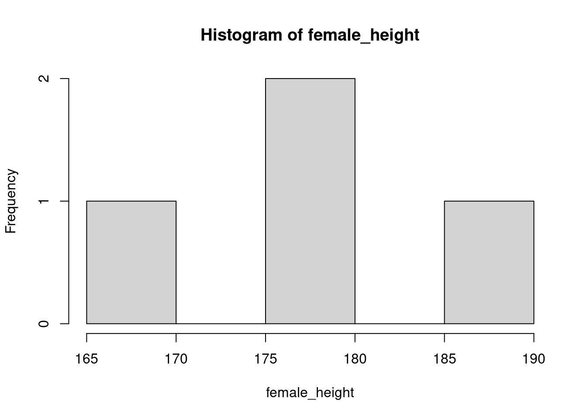
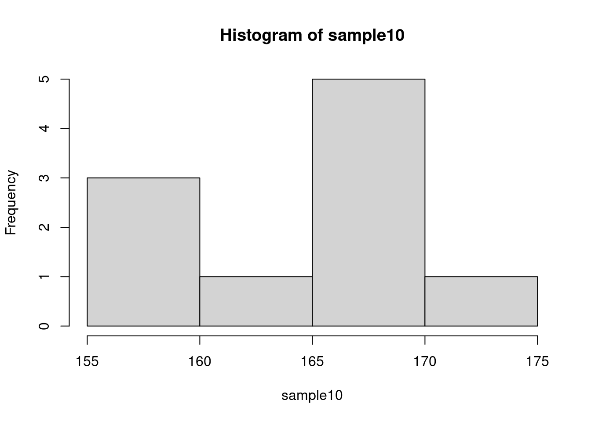
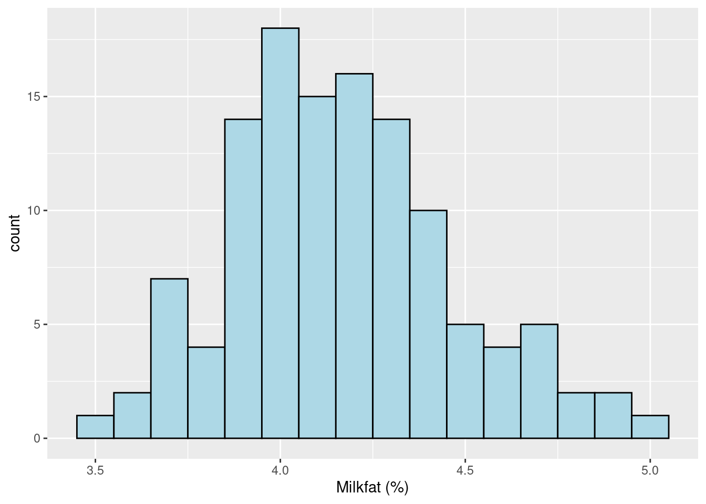
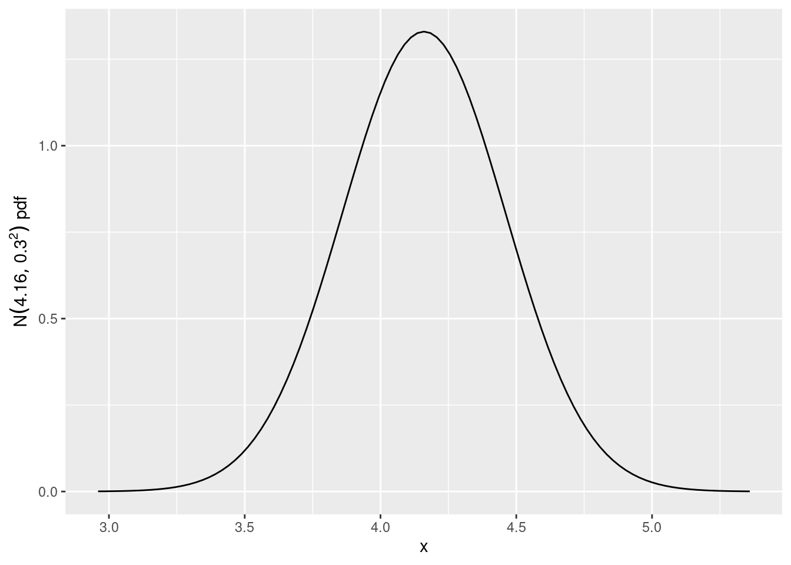
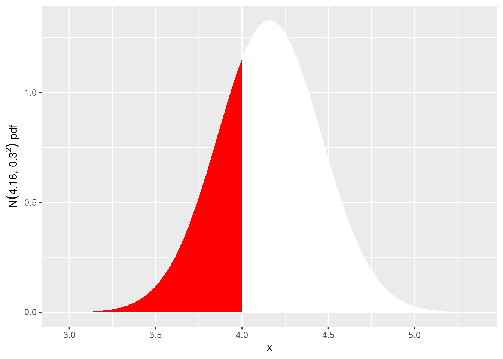
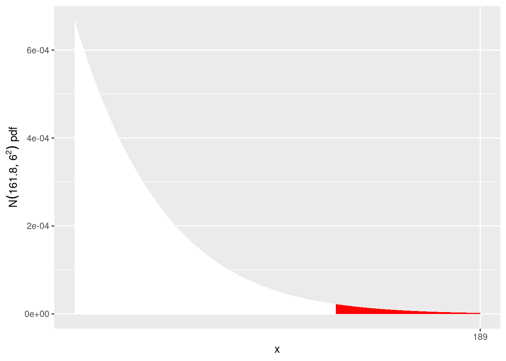

female_height <- c(176, 180, 187, 168)
male_height <- c(175, 183, 163, 190)Facing challenges
Project 1 is due in week 5 and for many of you this may be your first university assignment; some may be nervous, while others may be more relaxed. Your demonstrators will use the start of this practical to discuss how you may be feeling for this first assessment and share ways you might want to approach and prepare for the assessment.
This is the last reflective activity for now, thank you all for contributing so far and we hope you have found some benefit in the activities. Now for some probability!
Learning outcomes
At the end of this computer practical, students should be able to:
- calculate tail, interval and inverse probabilities associated with the Normal distribution
- calculate probabilities associated sampling distribution of the sample mean by using simulation in R and using R commands.
Link to data is below:
- ENVX1002_Data4.xlsx
- Alternatively download from Canvas
R commands for normal distribution
- Probability density function: f(x) = dnorm(x,\mu,\sigma)
- Cumulative probabilities: F(x) = P(X \le x) = pnorm(x,\mu,\sigma)
- Interval probabiltites: P(a \le X \le b) = pnorm(b,\mu,\sigma) - pnorm(a,\mu,\sigma)
- Inverse probabilities: Find x such that P(X \le x) = q qnorm(q,\mu,\sigma)
Normal distribution
Exercise 1 - Class activity - How tall is ENVX1002??
Set up a new PROJECT for Lab 4 and create a quarto document called
Lab_4.qmdand save it in your project directory.Record the height of all male and female students in the class up on the board (we will try to provide a tape if you are unsure about your height)
Enter the data into r, for example:
- Calculate the mean and standard deviation using R and graph the distribution for both genders, for example
f_mean <- mean(female_height)
f_sd <- sd(female_height)
hist(female_height) 
Discuss with your neighbour or post on the zoom chat, which model (distribution function) do you think would fit the data
How does your class compare to the Australian statistics. For this we will look at the mean and standard deviation of measured heights for men and women aged 18 - 24 from the ABS for 1995 see page 13 of
Note that both reported and measured heights are provided and not surprisingly reported heights are bigger that the measured :o)
Simulating height distribution
Using the ABS stats on female and male heights from the previous exercise:
Use R to simulate samples of female or male heights for 10, 100, 1000, 10000 simulations and report the mean and standard deviation and draw a histogram for each.
Discuss with your neighbour what happens to the shape of the histogram as your number of simulations increases. An example is given below for 10 simulations of female height. You can make a table in excel to record your observations by hand using the headings:
| Sample size | Mean | SD | Shape of histogram |
|---|---|---|---|
| 10 | |||
| 100 | |||
| 1000 | |||
| 10000 |
set.seed(1) # means that we all generate the same set of random numbers so we can compare
sample10 = rnorm(10,163.9,6.6) #generates a random sample of size 10 from N(163.9,6.6^2)
sample10 # prints the 10 simulated values (you may not want this with the 10K simulations!!) [1] 159.7654 165.1120 158.3849 174.4289 166.0748 158.4849 167.1170 168.7729
[9] 167.7002 161.8844mean(sample10)[1] 164.7725sd(sample10)[1] 5.151867hist(sample10)
- Find the probability P(X \ge 180) for each of the simulations and also the exact value. What do you notice in the difference between each of the simulations and the exact probability? An example is given below for the 10 simulations above and the exact probability:
1-pnorm(180,163.9,6.6) ## actual p[1] 0.00735596length(which(sample10>=180))/10 ## simulated p for sample size 10[1] 0Sampling distributions
Exercise 2 - Milkfat example
Part 1
The milkfat content in milk (in %) for 120 cows are presented in the worksheet called ENVX1002_Data4.xlsx. Copy the file into your project directory and:
- Import the data into R.
library(readxl)
milkfat <- read_excel("data/ENVX1002_Data4.xlsx", sheet = "Milkfat")- Calculate the summary statistics of Milkfat (mean, median and sd)
Note that we use $ColumnName to select a column from the data
mean(milkfat$Milkfat)[1] 4.166083- What type of cows could they be? Compare your data to the table in the following link:
https://lactalis.com.au/info-center/different-breeds-of-cows/
- What state could they be from? Check some of the recent Milk Production reports from Dairy Australia. The data can be found in the Average Milkfat & Protein (%) section of the PDF report: The reports can be found at the following link:
https://www.dairyaustralia.com.au/resource-repository/2020/09/25/milk-production-report
- Could the data be normally distributed?
- Create a histogram and boxplot of the milk fat data. Is the data
Normally distributed?
require(ggplot2)Loading required package: ggplot2ggplot(milkfat, aes(x=Milkfat)) +
geom_histogram(binwidth = 0.1, fill="lightblue", color="black") +
xlab("Milkfat (%)") 
- In the UK,
breakfast milk' (orChannel Island milk’) has 5.5% fat content. What percentage of the cows in this data set is yielding breakfast milk with \ge 5.5%?
s=sort(milkfat$Milkfat) # Sorts the data
s # Look at the sorted data [1] 3.47 3.56 3.58 3.66 3.66 3.70 3.70 3.72 3.74 3.74 3.77 3.81 3.82 3.83 3.86
[16] 3.86 3.87 3.88 3.89 3.89 3.89 3.89 3.91 3.91 3.92 3.93 3.94 3.95 3.96 3.96
[31] 3.97 3.97 3.97 3.97 3.97 3.98 3.99 3.99 4.00 4.00 4.00 4.02 4.03 4.05 4.05
[46] 4.05 4.06 4.06 4.07 4.08 4.09 4.09 4.09 4.09 4.10 4.10 4.10 4.11 4.12 4.14
[61] 4.15 4.16 4.16 4.17 4.17 4.18 4.20 4.20 4.20 4.20 4.22 4.23 4.24 4.24 4.24
[76] 4.24 4.25 4.27 4.28 4.28 4.29 4.29 4.30 4.31 4.32 4.32 4.33 4.33 4.33 4.34
[91] 4.35 4.36 4.38 4.38 4.38 4.38 4.38 4.40 4.41 4.42 4.42 4.46 4.48 4.49 4.51
[106] 4.52 4.58 4.58 4.60 4.60 4.66 4.67 4.67 4.70 4.71 4.81 4.82 4.88 4.91 5.00length(s[s>=5.5]) # Counts how many are >= 5.5[1] 0- In Australia, full cream milk has greater than 3.2% milk fat content. What percentage of these cows is yielding full cream milk?
## Your turnPart 2
Let X represent the milk fat content for the population of this breed of cows.
Assuming the population is normal, use the sample mean and standard deviation from the previous question as estimates of the population parameters. So X\sim (\mu =..., \sigma^2 = ...).
Draw a picture of the curve representing X. The below example uses ggplot2 to draw the curve for N(4.16,0.30^2).
library(ggplot2)
ggplot(data.frame(x = c(4.16-4*0.3, 4.16+4*0.3)), aes(x = x)) +
stat_function(fun = dnorm, args = list(mean = 4.16, sd=0.30)) +
xlab("x") +
ylab(expression(N(4.16,0.30^2)~pdf))
- What is the probability that 1 cow has a fat content less than 4%? We will adapt the ggplot command above a picture of this probability and then use R to find the probability.
Hint: You may need to use the stat_function command to draw the curve and then use the pnorm command to find the probability.
ggplot(data.frame(x = c(4.16-4*0.3, 4.16+4*0.3)), aes(x = x)) +
stat_function(fun = dnorm, args = list(mean = 4.16, sd=0.30)
,geom = "area", fill = "white") +
stat_function(fun = dnorm, args = list(mean = 4.16, sd=0.30)
, xlim = c(4.16-4*0.3, 4), geom = "area", fill = "red") +
xlab("x") +
ylab(expression(N(4.16,0.30^2)~pdf))
pnorm(4,4.16,0.30)[1] 0.2969014What is the probability that 1 cow (randomly sampled) has a fat content greater than 4.5%? Try and adapt the ggplots above to draw a picture of this probability and then use R to find the probability.
For a sample of 10 cows (randomly sampled), what is the probability that the sample mean milk fat content is greater than 4.2%?
Hint: First find the distribution of the sample mean \overline{X}. Then find P(\overline{X}>4.2)
Standard Error of the mean
Exercise 3 - Skin cancer
A dermatologist investigating a certain type of skin cancer induced the cancer in nine rats and then treated them with a new experimental drug. For each rat she recorded the number of hours until remission of the cancer. The rats had a mean remission time of 400 hours and a standard deviation of 30 hours. From this data, calculate the standard error of the mean.
Exercise 4 - Soil carbon
An initial soil carbon survey of a farm based on 12 observations found that the sample mean \overline{X} was 1.2% and the standard deviation s was 0.4%. How many observations would be needed to estimate the mean carbon value with a standard error of 0.1%?
Exercise 5 - What’s in the media - looming state election
An article was published in the Sydney Morning Herald on Saturday 20.3.2010 about statistics related to opinion polls. Read it and find the sentences related to (i) populations versus samples (ii) standard error formula (iv) the effect of sample size on standard errors.
http://www.smh.com.au/national/demystifying-the-dark-art-of-polling-20100319-qmai.html
Exercise 6 - Extra practice
The average Australian woman has height (in cms) of 161.8 with a standard deviation of 6.
The Australian Institute of Sport ran a netball training camp for the best Australian young players. How tall were the goal position players? http://www.abc.net.au/news/2015-06-14/tall-athletes-get-support-at-ais-to-stand-as-proud-netballers/6544642
What is the probability of finding an Australian woman of this height or taller?
Hints:
Step 1: Using ggplot, draw a sketch of the Normal curve with the probability identified. You may need to draw a section of the right tail as the probability is small! We have provided the solution for the plotting to assist you.
Step 2: Calculate the probability in R.
1-pnorm(189, 161.8, 6)[1] 2.903004e-06ggplot() +
stat_function(fun = dnorm, args = list(mean = 161.8, sd=6),
geom = "area", fill = "white", xlim = c(180, 161.8+4*6)) +
stat_function(fun = dnorm, args = list(mean = 161.8, sd=6),
geom = "area", fill = "red", xlim = c(161.8+4*6, 189)) +
xlab("x") +
ylab(expression(N(161.8,6^2)~pdf)) +
scale_x_continuous(breaks = 189)
Dharshani Sivalingam is the tallest netball player in the world. How tall is Dharshani? https://en.wikipedia.org/wiki/Tharjini_Sivalingam What is the probability of finding an Australian woman of Dharshani’s height?
Madison Brown is one of the the shortest Australian International players. How tall is Madision? https://en.wikipedia.org/wiki/Madison_Browne What percentage of Australian women are between Madison and Dharshani’s heights?
If 80% of Australian women are above a certain height, what is that height?